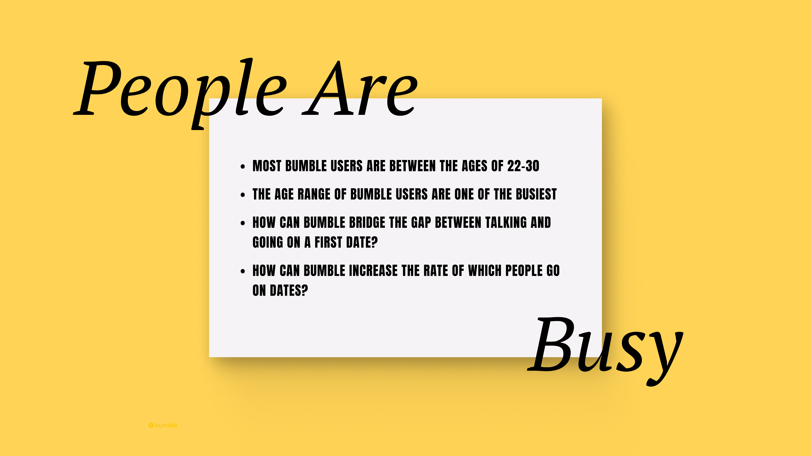
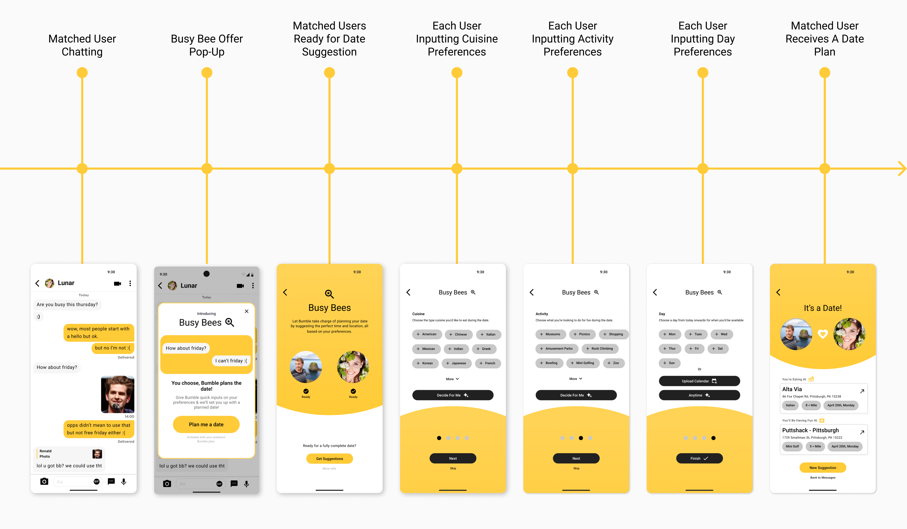

Research & Goals
Research
A survey conducted by Bumble's UX Researchers found that 25% of of matched users actually go on a first date.
A survey conducted by Bumble's UX Researchers found that 25% of of matched users actually go on a first date.
The age range of most bumble users are between the ages of 22-30, some of the busiest times in most adults lives. How can Bumble support their users in this area while also increasing the number of premium users? 
As the sole UX/UI Designer, my goal was to ideate and execute new premium features that will convert regular users to premium users. From ideation to hi-fi designs, I played a crucial role in providing Bumble users premium user experience while also bringing business value to Bumble.
Sole UX/UI Designer
~2 Months (Sep. 2023 - Nov. 2023)
Bumble - Premium Team
Figma, Maze
Busy Bee is a new feature included in the existing premium plan that offers users a date planner with just four simple inputs. Using the inputs from both the user and their match, Bumble curates a personalized plan for their first date.
The introduction to Busy Bee happens when keywords such as "schedule" or "plan" are noticed by Bumble's system, allowing for an opportunity to provide users with a solution to planning a date.
Automating the date-planning process saves users time, allowing them to focus on building connections rather than dealing with the complexities of planning.
By addressing user pain points, such as the time and effort involved in planning dates, Busy Bee adds tangible benefits that elevate the premium experience and encourages more users to upgrade, driving growth for Bumble.
User flow of Busy Bee with hi-fi designs.
I always design with intent in mind. From consistent branding to easy navigation. Below are some callouts to design decisions I made in order to provide a seamless user experience with purposeful UI.
My user researcher and I conducted usability testing with a group of 13 users, employing a remote testing tool to gather feedback efficiently, called maze. Users were asked to complete tasks related to inputting preferences to curate a planned date and interacting overall with Busy Bee. Overall, feedback was positive, with users appreciating a new service being added to premium feature and some being converted from a regular user to a premium user. Some key feedbacks were:
The implementation of Busy Bee was rolled out to a small user base of Bumble that showed an increase in user engagement & converting regular users to Premium subscription. Notably:
This project highlighted the importance of meeting user needs by exploring new avenues as well as how those avenues can also increase the value of the business.